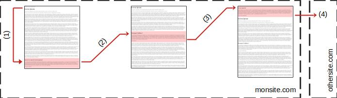
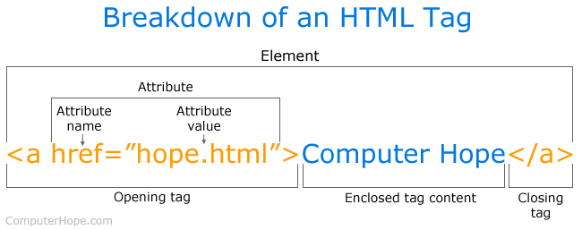
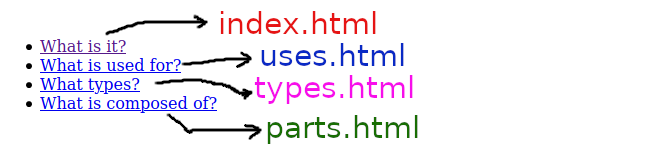
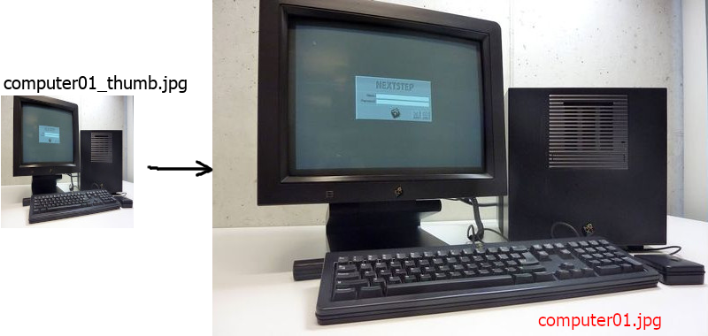
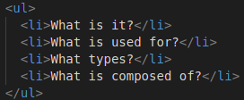
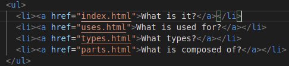
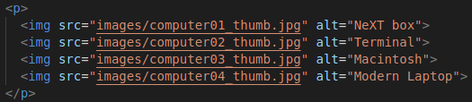
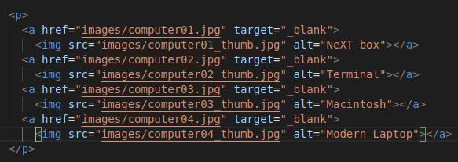

Le mot HTML est l'HyperText Markup Language, langage de balisage hypertexte.
D'après Wikipedia :
Un hypertexte est un document ou un ensemble de documents contenant des unités d'information liées entre
elles par des hyperliens. Ce système permet à l'utilisateur d'aller directement à l'unité qui l'intéresse, à
son gré, d'une façon non linéaire.
Les liens nommés (signets) : utilisés pour référencer des parties d'une
même page.
<!-- Lien nommé -->
<a href="#section_2">Section 2</a>
<!-- La destination d'un lien nommé -->
<h2 id="section_2">Partie n°2</h2>
Exercice 1
L'image suivante montre les liens entre des pages du site monsite.com et les liens qui le
relient avec le site othersite.com.

Les types de liens
On demande de déterminer les types de liens (1), (2), (3)
et (4).
Les choix disponibles sont :
Lien interne
Lien externe
Lien nommé
Lien interne nommé
Attributs
La balise <a> possède deux parties importantes :
L'attribut href qui indique la cible du lien.
Le texte/l'image qui servira de lien cliquable.
Cette balise supporte, aussi entre autres, l'attribut target qui indique le nom de la fenêtre
dans laquelle le lien sera ouvert. Pour ouvrir le lien dans une page vide, on lui affecte la valeur
target="_blank".

Définition d'un lien hypertexte
Exercice 2
Ouvrir le site Web, computers, que nous avons commencé, puis :
Compléter les liens hypertextes qui permettent de se déplacer d'une page à l'autre. Les fléches
indiquent les noms des fichiers à ouvrir lorsqu'on clique sur le texte souligné.

Les liens
La page index.html contient des images miniaturisées des ordinateurs. On veut
créer des liens hypertextes dans cette page, à l'aide des images computerXX_thumb.jpg, pour
afficher une version plus grande de ces images dans une nouvelle page.
Le clic sur l'imagecomputer01_thumb.jpg ouvre l'image
computer01.jpg dans une nouvelle fenêtre.

Agrandir les images
Refaire le même travail dans la page parts.html avec les composants de l'ordinateur.
Solution
Les liens suivants sont ajoutés dans toutes les pages.

Avant l'ajout des liens

Les liens entre les pages
<ul>
<li><a href="index.html">What is it?</a></li>
<li><a href="uses.html">What is used for?</a></li>
<li><a href="types.html">What types?</a></li>
<li><a href="parts.html">What is composed of?</a></li>
</ul>
Les liens suivants sont ajoutés dans la page index.html, pour agrandir les images

Avant l'ajout des liens

Ajouter des liens pour agrandir les images des ordinateurs
Les balises HTML qui se présentent par paires sont dites non orphelines,
non-void tag ou non-empty tag. Elles commencent par une
balise ouvrante, <balise>, et se terminent par une balise fermante,
</balise>.
Exemples :
<h1>...</h1>,
<p>...</p>, etc.
Empty tags
D'autres, dites, orphelines ne nécessitent pas de balise fermante, empty
tags ou void tags.
Exemples : <img src="..." alt="...">, <br>, etc.
Bloc & En ligne
Block tags
Une balise de bloc commence toujours dans une nouvelle ligne. Elle s'étend sur
toute la largeur disponible.
Un paragraphe <p>...</p> est un élément de bloc, ainsi chaque paragraphe
commence dans une nouvelle ligne et s'étend sur toute la largeur qui lui est disponible.
Premier paragraphe
Deuxième paragraphe
Troisième paragraphe
Inline tags
Une balise en ligne ne commence pas dans une nouvelle ligne. Et elle s'étend
uniquement sur l'espace qui lui est nécessaire.